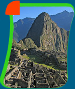
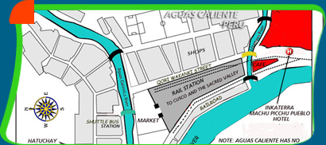
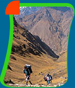

Travel to Machu Picchu in the Peruvian Andes |
Peru - Cuzco - Machu Picchu Travel Packages |
| Travel to Machu Picchu in Peru, by way of Cuzco,
the ancient capital of the Incan Empire and the gateway to
the mysterious citadel. 500 years ago, Cuzco lay at the heart
of the vast Incan Empire that stretched across most of the
eastern coast of South America. Floating above the clouds, in a secluded and otherworldly lair in the foothills above the Amazon, Machu Picchu was self-contained, and surrounded by agricultural terraces, and watered by natural springs. Among the cloud-shrouded ruins were temples, palaces, baths, storage rooms and over one hundred other dwellings. With meticulous care, solid stones were carved rom the gray granite of the mountains, revealing structures that are today, architectural wonders. A great many of the building blocks weigh up to 50 tons or more, yet they are sculpted so precisely and knitted together so exactly, there is no need for bond or mortar to unite them.. A majority of the site is dedicated to buildings of spiritual and religious meaning. It is said that you can feel the power of the spiritual presence just by being there. |
|  |
The Incas, famous for their intricate stonework, consolidated
their empire over Western South America with massive
temples and stone fortresses. Many of these are virtually
intact to this day. Much of modern Cuzco is built upon
the original stone walls left by the Incas. Your journey
will start here.. A half day tour of Cuzco includes
visits to to the surrounding temples with panoramic
views of the city. Because Cuzco is high in the Andes,
you will need to take some time at leisure to adjust
to the altitude. One popular option is to journey to
the Sacred Valley. This valley, stands at a lower elevation,
and hosts some of Peru's most massive Inca ruins and
stunning landscapes. Among the age-old villages and
spectacular vistas, are some of Peru's finest hotels.
Here too, you may interact with the locals, or barter
and trade for goods with Indian vendors in Pisac -
one of Peru and South America's most colorful outdoor
markets. If you like, we will escort you to lunch at
a fine Peruvian Hacienda..... close to the Urubamba
River, with a fabulous view of the Andean foothills.
|
|
| Explore
Peru - Journey on by train along the Urubamba River.
Your travel destination is Machu Picchu, South America's most
famous landmark. |
Your train travels about four hours from Cuzco,
or about two hours departing from the Sacred
Valley. Along the way the train makes regular
stops where hikers can disembark. As your Inca
trail tour operator, here is where expert guides
will escort you onto the world famous Inca Trail.
Hike along the Andean loud forest amongst waterfalls
and scenic villages, then enter Machu Picchu
from the Gate of the Sun at dawn. Those who continue
on by train will arrive in Aguas Caliente and
transfer to a motor coach nearby. Machu Picchu
is perched high in the cloud forest, an enormous
city built with massive stones, and surrounded
by three towering peaks. Thought to be abandoned
more than five hundred years ago by the Incas,
it was lost to recorded history until the year
1911. This is the "Lost City of the Incas",
Machu Picchu. Expert guides will escort you
through the city.....or take the time to explore
on your own. At midday, take the time for a delicious
lunch at the dining room of the Hotel Sanctuary
Lodge. This is luxury travel and adventure in
Peru at it's best!
|
|
| Upon request and with your own travel
specifications in mind, Stanford Travel Systems
will be pleased to offer you a custom designed
itinerary featuring a full description of your
journey and its price. STS offers a full range
of travel tours and luxury travel packages to Peru,
including hotel accommodations, local excursions,
transfers, resort stays, and the services of experienced
drivers with a command of English. For those looking
for the very best in travel on their own schedule,
Take a look at the following suggested tour packages. |
|
 |
|
|
|
Click on the header above to enlarge this image. A map of Aguas Caliente, Peru - Aguas Caliente is the gateway to Machu Picchu and the town just below the peaks at Machu Picchu. The town has no vehicular traffic or taxis and only offers numerous daily shuttles from the town to Machu Picchu. The shuttle ride takes about twenty minutes along the switch backs up to Machu Picchu and return. There are three major hotels in Aguas Calente and one major hotel located next to Machu Picchu on the peak. To see a large image of this map, click on the header above.  |
|
|
|
|
PERU
VACATIONS AND TOUR PACKAGES |
| MACHU
PICCHU TRAVEL - VACATION PACKAGES |
CLASSIC
CUZCO / MACHU PICCHU |
6 DAYS / 5 NIGHTS WITH OVERNIGHT NEAR MACHU PICCHU
With Land Only Prices Per Person From:
Deluxe Hotel - $1,890 Double Occupancy
First Class Hotel - $1,570 Double Occupancy based on two passengers.
This price includes one night in Lima, two nights at the hotel in Cusco, one night in the Sacred Valley and one night at Machu Picchu. Transfers are included airport / hotel / airport as well as tours in Cusco, the Sacred Valley (all day with lunch) and at Machu Picchu. Transfers and tours are private except at Machu Picchu. Dinner, breakfast are included at Machu Picchu.
DAY 1 and 2 - LIMA / CUZCO - Arrive in Lima and transfer to a local hotel. On day two, guide will transfer you to the local airport for your flight to Cuzco. For day 2, take a short flight to Cusco followed by a drive to the Sacred Valley. Check into your hotel and take a full day private guided tour of the Sacred Valley with lunch at Wayra Ranch. Recommended to tour the Sacred Valley on day two visiting Ollantaytambo, the Inca Fortress, and the Pisac Indian Market. From there, it is a shorter train ride to Machu Picchu on the next day. The Sacred Valley is also at a lower altitude than Cuzco.
Day 3 - MACHU PICCHU - Early in the morning, depart for the four- hour excursion by train through the cloud forest. Travel on to Machu Picchu. Lunch will be included at the Sanctuary Lodge Hotel. Escorted guided travel tour of the fabled "Lost City", Machu Picchu. Tour in a small group setting.
Overnight at a selected hotel at, or near Machu Picchu. This luxury travel Peru package should be booked early. Rooms are limited.
Day 4 - MACHU PICCHU -Early morning rise to witness Machu Picchu at sunrise, an unforgettable mystical experience. Returning by Machu Picchu train to Cuzco in the afternoon and transfer to your hotel.
Day 5 - CUZCO / LIMA - Breakfast is included at the hotel dining room, then take a private guided tour of Cusco and the nearby ruins at Sacsayhuaman. Overnight and transfer to the flight to Lima and home on day 6.
Please Note: Local airfare is not included in this price. Breakfast is included daily at the hotel dining room.
Book your travel plans at an early date. Hotel rooms in Cusco and
Machu Picchu are at a premium and in the high season, the hotels are often full.
|
|
|
|
HIKING ALONG
THE ROYAL INCA TRAIL TO MACHU PICCHU |
PERU ADVENTURE
TRAVEL |
2
Days / 1 Nights - Daily Departures
Land Only Per Person Prices From: $395.00 Per Person
Adventure travel in the
land of Peru at it's best! Trek the Inca Trail.
enjoy an all-day hike - departing the train at marker 104 along the train
route , for an all day hike that culminates at the Sun Gate overlooking Machu
Picchu itself. An experienced guide will be with you on the trail, and descend
with you into Machu Picchu. Next day, take a comprehensive tour of Machu Picchu.
Call for prices and customized travel packages. Toll Free 1-877-213-1688 |
 |
|
|
|

{kind=link}